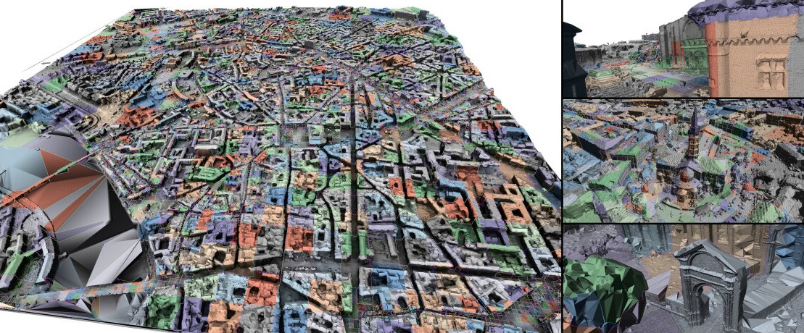
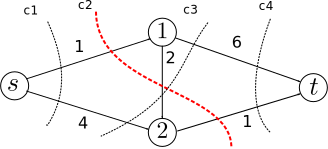
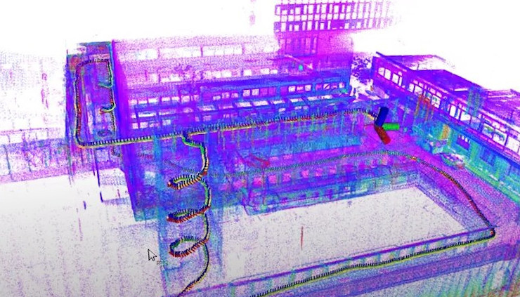
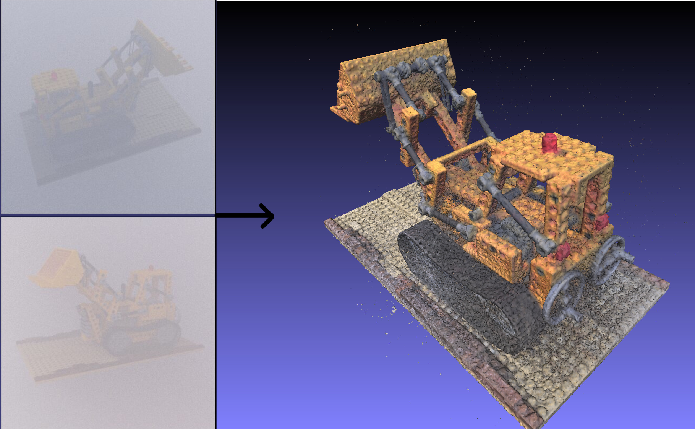

Laurent Caraffa
73 avenue de Paris · 94165 Saint-Mandé CEDEX · (+33)1 43 98 73 61 ·
laurent
.caraffa@ign.fr
Researcher in Geographic information science, computer vision, machine learning and big data.
Chargé de recherche à l'IGN en sciences de l'information géographique, vision par ordinateur, apprentissage, reconstruction de surface et Big Data.
Research Interests
Sujets de recherche

Big data / Cloud Computing
Big data / Cloud Computing

Mathematical optimization
Opimisation

3D Mapping
3D Mapping

Photogrammetry in bad weather condition
Photogrammétrie en conditions dégradées
News
Actualités
-
4/04/22: (closed) Phd proposal : Point cloude based large-scale place recognition. (clos) Sujet de thèse : Reconnaissance de lieu à grande échelle à partir de nuages de points 3D.
-
3/12/21: article "Efficiently Distributed Watertight Surface Reconstruction" accepted at 3DV2021. l'article "Efficiently Distributed Watertight Surface Reconstruction" accepté à 3DV2021.
Experience
-
2010-2013
PhD student
Doctorant
PhD on stereoreconstruction under bad weather conditions.
Thèse posrtant sur la reconstruction par paire stéréoscopiques en conditions dégradées.
-
2014-2016
PostDoc
Post Doctorat
After my PhD, I did a 2 years post-doc at IGN France on surface reconstruction.
Après ma thèse, j'ai effectué un post-doc à l'IGN sur la problématique de reconstruction de surface.
-
2016-
Permanent researcher
Chargé de recherche
permanent researcher at IGN France on photogrammetry and big data.
Chargé de recherche à l'IGN en photogrammetrie et Big-data.
Other research activities Autres activités de recherche
Teaching
Enseignement
Publications
[ACL] Journals
[ACLN] Journals
[ASCL] Others
[ACTI] Conferences
[ACTN] Conferences
[COM] Conferences
[OS] Books and Chapters
[DO] Books and Chapters
[AFF] Posters
[AP] Preprints
[TH] Dissertations
[INV] Invited Talks
[PV] Popularization
Projects
Projets
On-going and past research projects
Projets en cours et passés
Urban Vision
Virtual reality in urban environnement.
Réalitée virtuelle en environnement urbain.
 "ISIT FUTURE"
2018-2022
"ISIT FUTURE"
2018-2022
BIOM
Building Inside/Outside Modeling.
Modélisation intérieur/extérieur de bâtiments.

 AAPG 2018-2021
AAPG 2018-2021